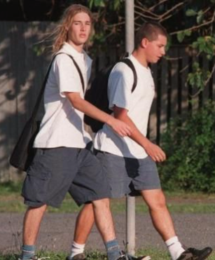

Clique na seta para voltar ao site original 🡺
Silverchair foi uma banda australiana formada em 1992 por Daniel Johns, Ben Gillies e Chris Joannou.
Obtiveram sucesso quando uma de suas primeiras canções, Tomorrow, ganhou uma competição local de música pela rede de televisão australiana SBS. A banda foi logo contratada pela Murmur e foi muito bem sucedida em concertos nacionais e internacionais.
A canção chegou ao número um nos gráficos americanos da Billboard Modern Rock Tracks e Album Rock Tracks e ainda chegou ao nº 28 na Billboard Hot 100 Airplay. Na Austrália, a canção alcançou o topo na Australian singles chart. No Reino Unido, a canção alcançou o nº 59 no UK Singles Chart em Setembro de 1995.
Johns, Gillies e Joannou tinham respectivamente 15, 14 e 14 anos quando ganharam o concurso.
Inicialmente, a banda seguiu as vertentes do grunge de Seattle da década de 90. Muito comparados ao Nirvana, especialmente Johns a Cobain, chegaram a ser chamados de Nirvana de Pijamas, uma alusão ao programa de TV infantil australiano Bananas de Pijamas. Daniel comenta: "Kurt nem era um ídolo para mim, mas eu não o odeio".
O primeiro álbum do Silverchair, Frogstomp, foi gravado em apenas nove dias e lançado em 1995. Todos os integrantes da banda tinham apenas quinze anos e ainda estavam no segundo grau.
Todas as letras foram baseadas em fatos fictícios, tendo como inspiração programas televisivos, tragédias locais e percepções de problemas dos amigos.
O álbum foi bem recebido; as revistas Allmusic e Rolling Stone deram-no de 4 a 4,5 estrelas respectivamente, devido à intensidade do mesmo, especialmente do hit Tomorrow.
Atingindo o primeiro lugar na Austrália e na Nova Zelândia, Frogstomp ficou entre os 10 mais do Billboard 200, sendo o primeiro a conseguir tal feito desde o INXS ( seus compatriotas ). O álbum vendeu mais de 4 milhões de cópias em todo o mundo.
Como Frogstomp e Tomorrow continuaram a ganhar popularidade ao longo do ano, a banda entrou em turnê com o Red Hot Chili Peppers e tocaram no teto do Radio City Music Hall, enquanto ainda continuavam a estudar em Newcastle.
Num caso de assassinato em janeiro de 1996, o advogado de defesa de Brian Bassett, dezesseis anos, e Nicholaus McDonald, dezoito, afirmou que a canção Israel's Son foi a grande inspiradora dos assassinatos dos pais de Bassett. A banda declarou que eles nunca aprovariam tais atos de violência, e o caso da defesa foi negado.
Ainda sob efeito do sucesso de Frogstomp na Austrália e Estados Unidos, o Silverchair começou a gravar seu segundo álbum, Freak Show, em 1997.
O álbum conseguiu colocar três compactos nas 10 mais da Austrália: Freak, Abuse Me e Cemetery. O quarto compacto, The Door, ficou em #25.
As canções tratavam de raiva e das altas expectativas recaídas sobre a banda. Segundo Johns, o título do álbum, que em português significa circo dos horrores, compara a vida de uma banda às caravanas que vão de cidade em cidade apresentar seus espetáculos.
Após dois álbuns considerados pós-grunge, o lançamento do álbum Neon Ballroom, terceiro da banda, em 1999, foi uma grande supresa para público e crítica.Com letras densas, orquestras, barulho e sutileza, Johns finalmente é reconhecido como um grande compositor. Em entrevista, o próprio confessa que detesta os trabalhos anteriores: "eu não sinto como se nossos dois primeiros álbuns fossem Silverchair. Aquilo é a nossa 'banda do ensino médio'. Eu realmente detesto eles".
O álbum conta com uma grande variedade de músicos, incluso a Sidney Symphony Orchestra e o pianista David Helfgott, que já na primeira faixa, Emotion Sickness, derrubam com qualquer sombra de dúvida a capacidade da banda de amadurecer e fazer som de gente grande.
Clique na câmera para ver o curta de Emotion Sickness!
Daniel pretendia que a faixa Miss You Love fosse interpretada como uma música romântica, e assim foi.
No Brasil, a música chegou inclusive a virar tema de duas novelas: Malhação e Império.
A verdade é que durante a composição de Neon Ballroom, Johns sentia que odiava música e tudo ao redor dela. Também não conseguia se relacionar com pessoas que não fossem sua família. Não havia mais amor em seu trabalho, em sua vida, e as coisas ficavam cada vez piores. Miss You Love ou sinto sua falta, amor fala sobre não ter mais prazer em fazer as coisas, e não sobre sentir a falta de alguém. Literalmente, sentir falta do amor.
A vida de rockstar pode ser o sonho de qualquer adolescente, mas não para Daniel.
Em entrevista à Juice Magazine o cantor reporta chegar à escola de bicicleta e ser fotografado por paparazzi, sofrer bullying e ser espancado. Jogavam fezes na piscina da casa de sua família e seguiam seus irmãos mais novos.
Johns começa então a desenvolver crises de pânico cada vez piores. Em 1999, pouco após o lançamento de Neon Ballroom, assume sofrer de anorexia, também conhecida como Ana. Não por acaso, o segundo vídeo do álbum, Ana's Song ( Open Fire ) ou Canção da Ana/ Anorexia, o mostra em uma cadeira de rodas. Daniel menciona que comia "o suficiente pra se manter acordado".
Em junho de 2001, o Silverchair entrou em estúdio com o produtor David Bottrill (da banda Tool, Peter Gabriel e King Crimson) para começar a trabalhar em seu quarto álbum, Diorama. Dessa vez, Daniel Johns assumiu formalmente o papel de co-produtor.
O álbum, o qual Johns descreveu como um mundo dentro de um mundo, surgiu de seu novo método de compor a maior parte das músicas no piano, uma técnica que ele desenvolveu durante o período em que a banda estava separada. Daniel chegou a aprender a tocar piano de ouvido para escrever a produzir as novas faixas.
Para completar sua visão de Diorama, vários outros músicos foram convidados para contribuir com o álbum, incluindo Van Dyke Parks, o qual contribuiu com arranjos orquestrais em Tuna in the Brine, Luv Your Life e Across the Night. Paul Mac, Jim Moginie e Yon Garfias também colaboraram com a banda.
Enquanto gravava Diorama, Johns se intitulou um artista, mais do que simplesmente um integrante de uma banda de rock, declaração com a qual os críticos de música em sua maioria concordaram após o lançamento do álbum.
Não era apenas a forma de compor de Daniel que havia mudado. Antes de começar o processo de Diorama, ele havia decidido deixar de tomar antidepressivos, que, segundo ele, não o permitiam mais sentir nada. Os altos e baixos do cantor em resposta a essa decisão transparecem nas 12 faixas do álbum ( contanto com a faixa escondida após After All These Years).
Contra todas as expectativas, Diorama era um álbum majoritariamente feliz e fantasioso, aclamado pela crítica e pelos fãs, apesar de parte da fan base ainda ser órfã dos riffs barulhentos de guitarra.
O primeiro compacto de Diorama, The Greatest View, foi lançado na Austrália no início de Dezembro para coincidir com a aparição da banda na turnê Big Day Out. Durante a turnê, a artrite reativa de Daniel tornou-se um problema, dificultando que ele tocasse guitarra.
Em 2003, após o lançamento do álbum, a banda anunciou um hiato, durante o qual seus membros se engajaram nos projetos paralelos The Dissociatives, The Mess Hall, e Tambalane. Reuniram-se novamente em 2005, no Wave Aid, e em seguida lançaram Young Modern.
Young Modern é o quinto álbum de estúdio da banda australiana Silverchair, lançado em 31 de Março de 2007.
As faixas Straight Lines, Reflections of a Sound, If You Keep Losing Sleep e Mind Reader foram lançadas como singles. O álbum estreou em 1º lugar na parada Australiana ARIA Charts, o quinto álbum da banda a conseguir tal feito, tornando o Silverchair a primeira banda a alcançar este recorde.
O disco foi bem recebido pela crítica especializada, que o considerou uma evolução musical da banda. No entanto, além das terras australianas, fãs esperavam um álbum tão ou mais grandioso quanto Diorama, enquanto Young Modern trazia um Silverchair mais voltado ao pop. Alguns chegaram a questionar se a melhora de saúde de Daniel traria o fim da banda. E trouxe.
A 25 de maio de 2011 os integrantes, através do site oficial, anunciaram que estavam colocando a banda em hibernação por tempo indeterminado.
Isso foi interpretado por fãs e jornalistas como o fim do Silverchair, mas esse fato foi prontamente negado pelo baterista Ben Gilles em sua página pessoal no Twitter, afirmando que "Não é uma separação. Eu repito: não é uma separação. É preciso ler o comunicado com atenção", dando a entender que o público e a imprensa estavam interpretando erroneamente a nota oficial da banda. O comunicado oficial foi:
"Formamos o Silverchair há quase 20 anos, quando tínhamos apenas 12. Hoje adotamos as mesmas regras que adotávamos na época(...) se a banda deixa de ser divertida e se ela não está cumprindo seu papel criativo, então precisamos parar (...)
(...)Apesar de nossos melhores esforços, ao longo do último ano ou mais, tornou-se cada vez mais claro que simplesmente não existe uma 'chama' entre nós três no momento. Portanto, depois de uma consideração muito profunda, queríamos que vocês soubessem que estamos colocando o Silverchair em hibernação por tempo indeterminado, e nós decidimos cada um fazer nossa própria coisa neste futuro próximo".
Não obstante, em maio de 2018, o vocalista Daniel Johns afirmou que não pretende voltar com sua antiga banda, nem mesmo "com uma arma na cabeça ou por um milhão de dólares", comentando em diversas entrevistas que as músicas do Silverchair o levavam de volta a um lugar muito obscuro, o qual não gostaria mais de visitar, mesmo tendo muito orgulho de seu trabalho.
Recentemente Jeff Apter, que foi o responsável por uma das biografias do Silverchair e uma das biografias de Daniel, tentou entrar em contato com os membros da banda para recolher depoimentos, mas eles não se sentiram confortáveis em falar sobre o grupo. O empresário John Watson viu a situação como um "não" coletivo.